La PC disminuyó su rendimiento
Posibles causas:
Éste es el problema más habitual entre los usuarios. Pueden haber muchas razones que expliquen una baja en el rendimiento de la PC. La más común es la presencia de datos fragmentados, presencia de spyware, registro corrupto, y programas innecesarios.
La solución:
Chequear los programas que tenemos instalados y desinstalar los que no usas, borrar los archivos innecesarios, y ganar velocidad y rendimiento, ya sea desfragmentando el disco, o bien añadiendo memoria a la máquina.
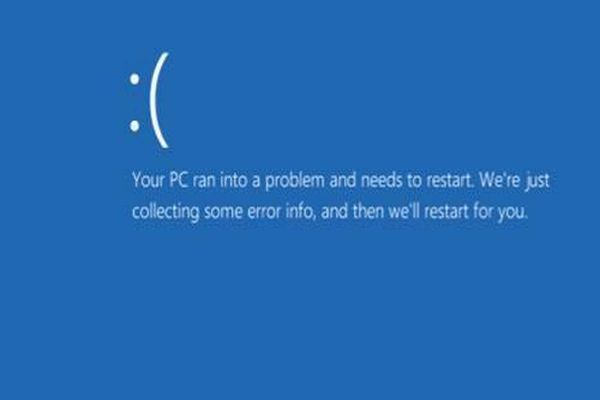
Aparecen pantallas de error
Posibles causas:
El posible que nuestra PC tenga spyware, y que ésa sea la causa de que los programas no respondan y se deban finalizar.Otra causa puede ser la falta de memoria RAM.
La solución:
Drivers mal instalados. Podrias fijarte re-instalando el programa que funciona mal. Si el problema es windows seria recomendable no formatear sino REPARAR WINDOWS, si el problema puede venir de la memoria RAM, se le puede agregar mayor memoria virtual a la PC y así optimizar su rendimiento.
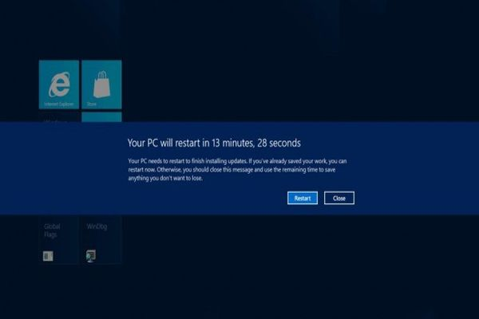
La PC se reinicia automáticamente o se apaga
Posibles causas:
Pueden ser dos. La presencia de un "gusano", o alguna obstrucción dentro del gabinete o el cooler. Esto último sucede cuando la PC no puede refrescarse: antes de recalentarse, sencillamente se apaga.
La solución:
Si se trata de un virus, correr los antivirus correspondientes. Si el problema es una obstrucción, una buena forma de evitarlo es mantener el interior del gabinete y el cooler limpios.
Ruidos extraños y vibraciones provenientes del gabinete
Posibles causas:
Algún componente del gabinete o hardware está fallando, ya sea el cooler, la fuente, cables mal conectados, o placas mal colocadas. Aquí las causas pueden ser múltiples.
La solución:
Abrir el gabinete y chequear que esté todo bien conectado. Si no encontramos ninguna anormalidad en el gabinete fijar si hay algun hardware que no funcione bien, buscar los drivers, si es muy complicado lo más conveniente es llamar al servicio técnico.
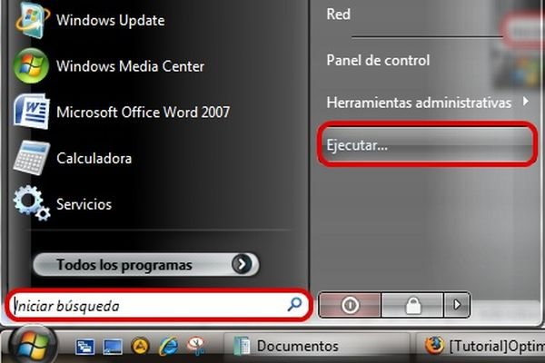
La página de inicio o el buscador se cambió solo
Posibles causas:
Es probable que hayamos sido víctimas del “high-jacking”. Esto quiere decir que tenemos un spyware instalado en nuestra PC, que pudo haber provenido tanto de un archivo descargado y ejecutado tanto como de una red socia o lun mail.
La solución:
Es probable que el spyware haya instalado un “java script” en el navegador para cambiar las opciones personales. Corriendo algún programa de diagnóstico, se puede evitar la llamada al servicio técnico.
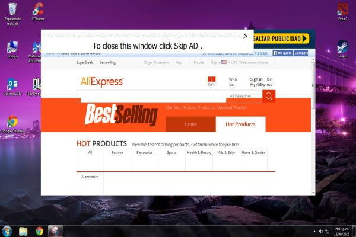
Publicidad en mi escritorio
Problema
Si no estás ejecutando tu navegador Web y todavía estás recibiendo publicidad en tu escritorio, lo más probable es que has instalado un adware (un programa que muestra anuncios no deseados).
Solución
Utiliza Malwarebytes Anti-Malware es gratis, una gran utilidad para la eliminación de todo tipo de malware. Sólo asegúrate de desactivar el software antivirus estándar antes de ejecutarlo.
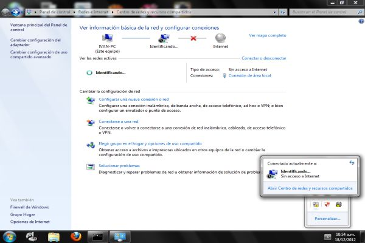
Mi Wi-Fi se sigue desconectando
Problema
El Wi-Fi esta desconectado.
Solución
Confirma que tu computadora esté dentro de la gama que cubre tu router inalámbrico. Normalmente las señales débiles significan conexiones débiles. A continuación, asegúrate de que la tarjeta inalámbrica de tu PC tiene los controladores más recientes. Trata de dejar que Windows solucione los problemas por ti haciendo clic en el icono de Wi-Fi en la barra de tareas y seleccionando “solucionar problemas”.
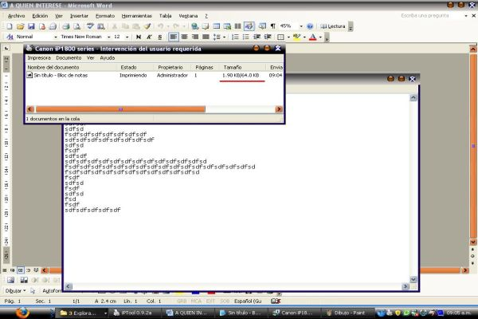
La impresora no imprime
Problema
No hay conexión con el dispositivo.
Solución
Prueba apagando la impresora. Desconéctala y vuelve a conectarla. Comprueba que la cola de impresión de tu impresora esté vacía, buscando el icono de la impresora en la bandeja del sistema y dando doble clic en él.
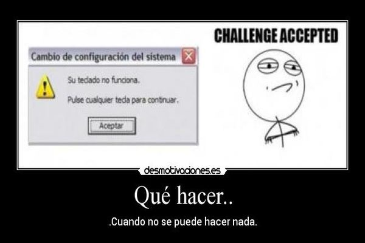
El teclado no responde
Soluciones
- Reinicie el equipo. Posiblemente Windows que colgó y el teclado norespondía.
- Verifique el no exista un administrador de políticas del sistema o Virus que deshabilite el teclado al cargar Windows. Muchos administradores de Sistemas deshabilitan el teclado en el archivo MS-DOS.SYS
- Pruebe su teclado con otro equipo. Si no responde, reemplácelo por otro nuevo
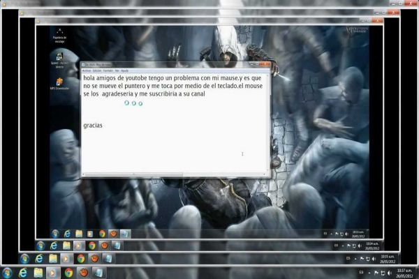
El puntero del mouse no se mueve
Soluciones
- Verifique que el cable del Mouse este correctamente instalado en sus puerto. Revise los controladores del Mouse en el administrador de dispositivos.
- Asegúrese que el puerto COMM1 este habilitado en el BIOS del PC
- Cerciórese que el Mouse no esté utilizando los mismo recurso de otros dispositivos
- Destape el mouse y revise que los lectores ópticos este derecho y el cable no esté abierto por dentro con un multímetro.
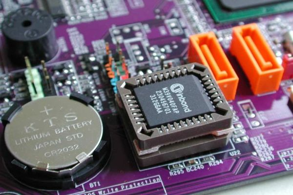
El reloj de la computadora pierde el tiempo
Solución
La batería CMOS es débil. Estos son fácilmente reemplazables. Sólo tiene que abrir la caja del ordenador y buscar en la placa principal, debería ver una pila circular poco que usted puede fácilmente pop y reemplazarlo por uno nuevo.
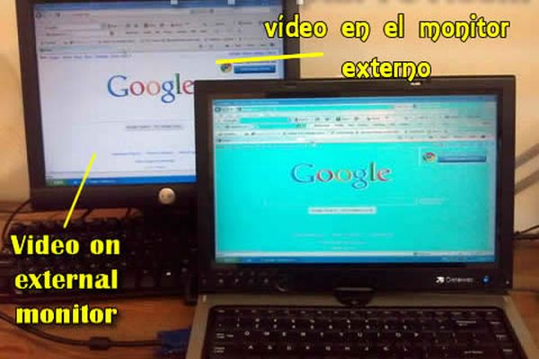
Las imágenes del monitor no tienen todos los colores
Solución
Verifique que los controladores de video del adaptador de video estén bien instalados. Esto se hace viendo las propiedades del Sistema desde Windows en la opción Administrador de Dispositivos de la categoría Sistema del Panel de Control. Si tiene un signo de exclamación, significa que a) Los controladores del Dispositivo no están instalados correctamente, b) El dispositivo tiene un conflicto de recursos (IRQ) direcciones de memorias, c) la configuración del adaptador de video no está bien y se corrige en las propiedades de la pantalla en la opción Configuración.
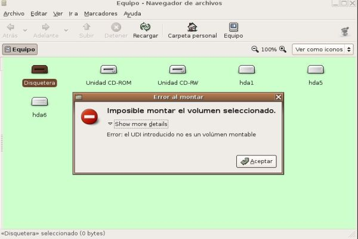
La unidad de FLOPPY no lee los disquetes
Solución
Revise la ranura de la Unidad y cerciórese que no exista ningún objeto incrustado en el cabezal. La mayoría de los problemas de estas unidades están asociadas al mal maltrato del usuario con el equipo. En algunos casos, los usuarios no sacan los disquetes de manera apropiada y se queda la compuerta del Disquete incrustado dentro de la Unidad. En este caso se deberá desarmar la unidad de Floppy y retirar el objeto incrustado, asegurándose de que el resto de los dispositivos mecánicos Esten en orden y que no hallan cables o fajas partidas.